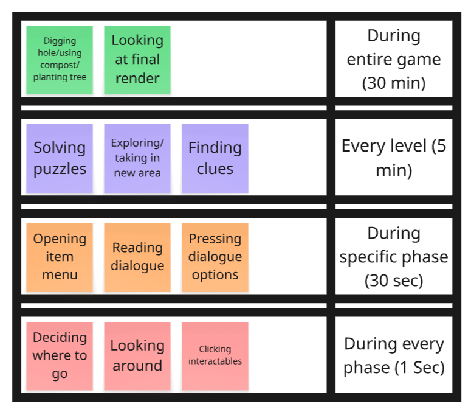
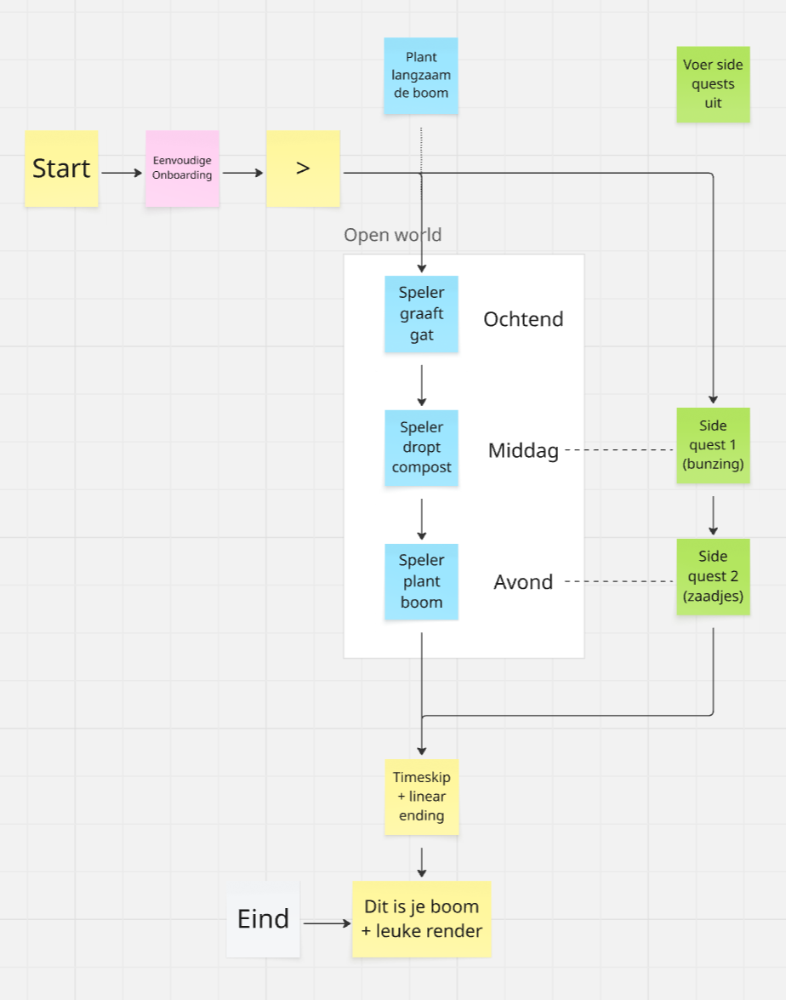
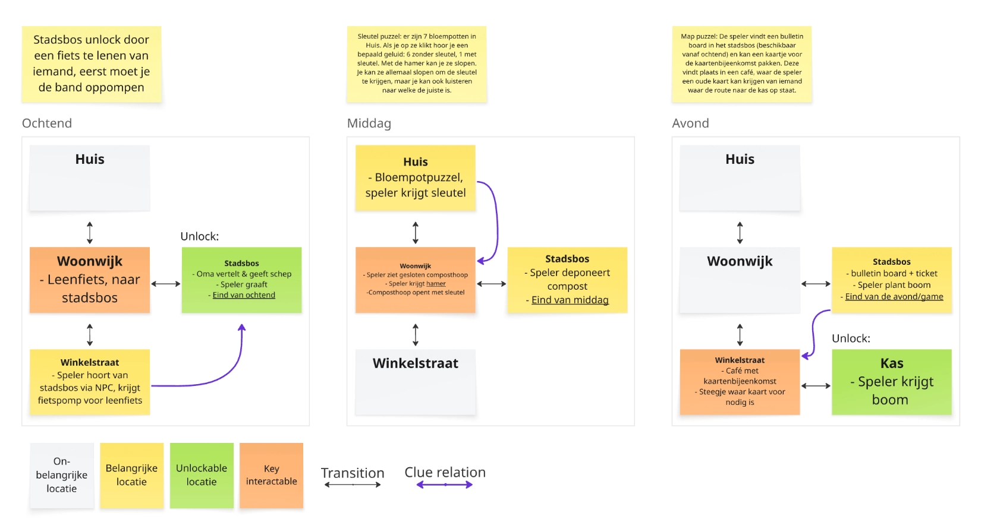
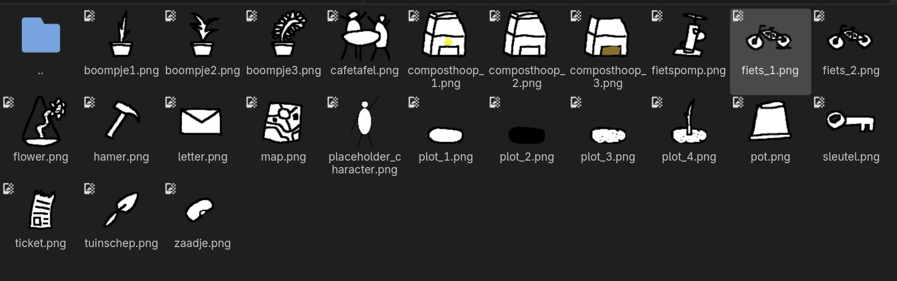

Burgbos is an applied, point & click puzzle/exploration game, built for the municipality of Utrecht. The player has to slowly find and plant a tree, exploring Rijnenburg and interacting with its inhabitants during three time slots 'levels'. The project taught me a lot about designing for a non-gaming audience, and the client was very pleased with the result!
Client's Brief
In 2035, the new neighbourhood Rijnenburg will be built as an expansion of city Utrecht. Through HKU, municipality Utrecht asked us to create a game that would get both future inhabitants and developers to think about the necessity of "infrastructures of mystery": infrastructures through which inhabitants will not just live in Rijnenburg, but actively feel and participate in the mysteries and magic of life itself, using sustainability as a starting point.
Pre-production
Concept
After brainstorming with the team, we settled on a simple concept: The player is asked to plant a tree inside the "Burgbos", the community forest. This tackles the clients needs on multiple fronts:
A community project like a shared forest supports community building (community)
Trees can live much longer than humans (mystery of life)
Planting a forest supports biodiversity (sustainability)
Prototype
I suggested a Google Maps-like interface, familiar to even non-gamers (our target audience). I created a simple prototype gameplay interface, and expanded it with content together with the team, representing a simple version of the full game.
We tested this setup with our target demographic, before getting the green light from our client, one week after receiving the assignment.
The prototype as showcased to the client.

An onion diagram breaking down the game into seperate loops.
Nested Gameplay Loops
Together with the team's other designer, I created an onion diagram, which helped us nail down the essence of our game by visualizing nested gameplay loops.
This was especially important since our target audience wasn't used to receiving a high cognitive load from a digital system, meaning we had to manage complexity.
Design

The progression/timeline of the entire game, as planned in the pre-production.
Game Flow
First, I established the game flow with the team, which would consist of a morning, afternoon, and evening segment (showcasing a day of life in Rijnenburg).
I visualized it in Miro, to showcase it to our client and keep the team on the same page.
Puzzle Design
It was my responsibility to design three puzzles/quests, one for each part of the day. They had to be:
Complex enough to encourage exploration and interaction with NPC's
Simple enough to be understood by non-gamers with varying intellect
Difficult enough to provide a cognitive challenge to more experienced gamers

I noticed puzzles can become quite complex if conveyed purely through text, so I visualized the puzzle flow in Miro.

Crude placeholder sprites I created to temporarily represent 2D sprites, latter substituted by our artist.
Placeholders
Other team members were responsible for 2D art assets, writing and side content. This meant I had to create placeholder assets and place them inside the greybox in-engine.